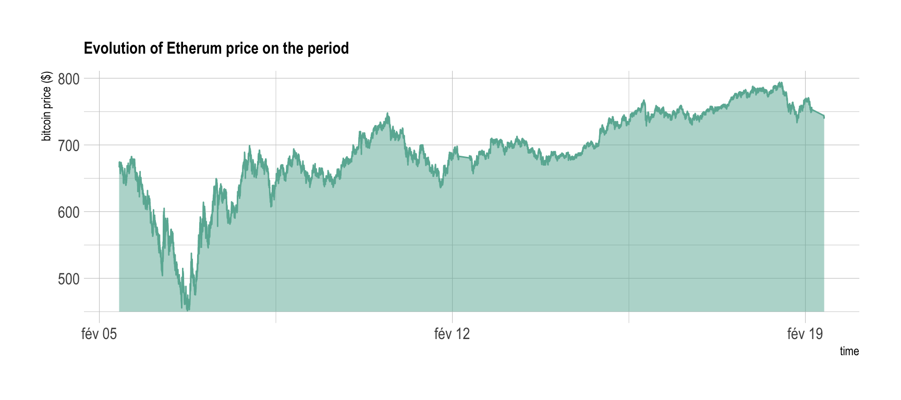

Crypto currencies are bought and sold on different exchanges. Basically it is like a bank, but for crypto. The price at which a token is traded depends on the offer and on the demand. Thus it evolves permanently, every couples of seconds.
It is possible to recover this price using the public API of exchanges. Let’s say you want to know the Bitcoin price in the Kraken exchange. You can do that in your browser, typing this URL:
https://api.kraken.com/0/public/Ticker?pair=BTCEUR
It gives you several information, three being of interest:
last: the price at the last transactionbid: price at which you can sell your cryptoask: price at which you can buy a cryptoIt is totally possible to do the same programming. This is handy since it will allow to recover the prices every couple of second automatically.
Here is an example using the R programming language to get the price of the bitcoin on Kraken and showing it in a clean table:
# package
library(tidyverse)
# Recover the information
library(RCurl)
adress <- "https://api.kraken.com/0/public/Ticker?pair=BTCEUR"
ticker <- getURLContent(adress)
# Make the format more readable
require(jsonlite)
tmp <- fromJSON(ticker)$result[[1]]
result = data.frame(ask=tmp$a[1], bid=tmp$b[1], last=tmp$c[1], open=tmp$o, low=tmp$l[1], high=tmp$h[1], volume=tmp$v[1], volumeQuote=NA, timestamp=NA)
# Show result
library(kableExtra)
options(knitr.table.format = "html")
tmp <- result %>%
select(-volumeQuote, -timestamp)
apply(tmp, 2, function(x){round(as.numeric(x),0)}) %>%
t() %>%
kable() %>%
kable_styling(bootstrap_options = "striped", full_width = F)| ask | bid | last | open | low | high | volume |
|---|---|---|---|---|---|---|
| 5076 | 5076 | 5076 | 5061 | 4963 | 5119 | 1486 |
I’ve written a set of functions allowing to get the price of many different currencies for the 5 main exchanges. You can easily use these functions. For instance, type the code below in R:
# Source de functions that are stored on github
source(“https://raw.githubusercontent.com/holtzy/Cryp-To/master/FUNCTIONS/Public_Market_Functions.R”)
# Use it: price of the bitcoin on bitstamp
get_bitstamp(time, “BTCEUR”)
I’ve harvested crypto prices:
5th and the 19th of February.This was easily done using an infinite loop that called the functions described above. The exact script used for this work is available here. 800,000 data points were recovered.
The resulting dataset is available on github in a compressed format. You can easily read it in R doing:
load(“../DATA/public_ticker_harvest.Rdata”)
head(Ticker)
As a teaser, here is the evolution of the etherum price on Bitstamp on this period of time:
load("../DATA/public_ticker_harvest.Rdata")
library(hrbrthemes)
Ticker %>%
filter( symbol == "ETHEUR" ) %>%
filter(platform == "Bitstamp") %>%
ggplot( aes(x=time, y=as.numeric(last))) +
geom_ribbon(aes(ymin=450, ymax=as.numeric(last)), fill="#69b3a2", color="transparent", alpha=0.5) +
geom_line(color="#69b3a2") +
ggtitle("Evolution of Etherum price on the period") +
ylab("bitcoin price ($)") +
theme_ipsum() +
theme(
plot.title = element_text(size=12)
)
The next step take this dataset and quantifies the differences between platform. If differences are big enough, we have a chance to perform arbitrage.
A work by Yan Holtz for data-to-viz.com